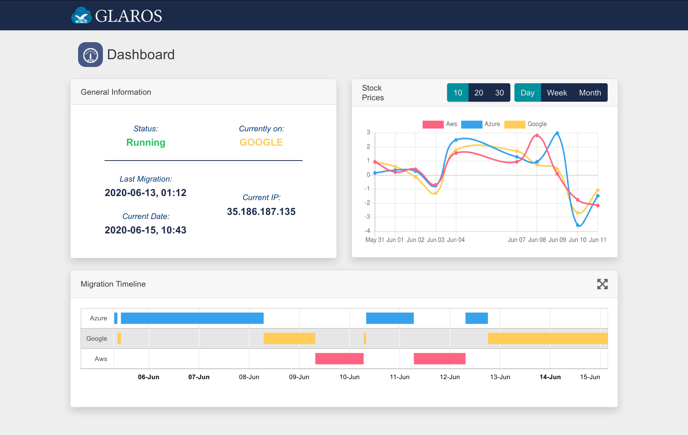

My team, consisting of five students, was tasked with developing software for a real-world Fortune 500 company. After interviewing multiple companies, we chose to work with Leidos, an American aerospace defense and biomedical research company. Our task was to create a software package that would migrate any application, regardless of complexity or language, between cloud hosting service providers to ensure the lowest possible hosting cost. We held customer meetings with a representative from the company on a bi-monthly basis, and held weekly standups using the principles of Agile software development and Scrum.
As per the project specifications, we provided no interface for manually controlling the software. This dashboard was created using Django and allows administrators only to monitor the activity of the software. It displays information about the application's state, such as which service provider is currently hosting it and the date of its most recent migration. It also displays migration history and trend lines representing change in stock price (used to inform migration algorithm).
A decision making algorithm controlled the frequency of migration between service providers. In the interest of rapid testing, we used relative change in stock price for Amazon, Microsoft, and Google to inform our algorithm instead of hosting price as we knew this would change frequently and would provide a pseudo-realistic environment in which to observe the software.
Virtual machines were provisioned in Amazon AWS, Microsoft Azure, and Google Cloud Platform. Since our objective was to minimize operating costs, only one virtual machine could be active at one time. Once our application decided it was time to make a migration, it remotely reactivated the target virtual machine and began copying itself.
Total development of Glaros took six months. We were told by our contact at the company that our software had exceeded expectations and we were awarded the highest possible grade for the project.